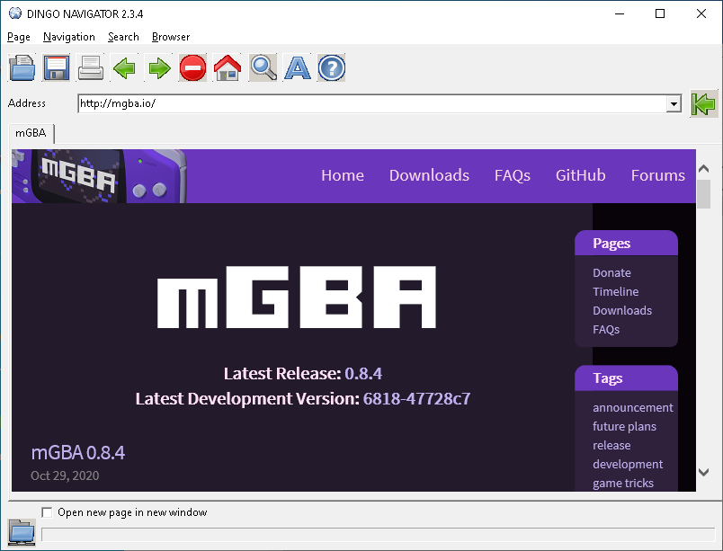

Dingo Navigator: User reference
System requirement
Windows XP or higher
Internet connection
Program description
Dingo navigator is simple web browser with intuitive user
interface. This browser made by Popov
Evgeniy Alekseyevich.
License
This program distributed under GNU GENERAL PUBLIC LICENSE.
Contact
You can send me a e-mail for
contact with me.
Source code
The source code included in source.zip archive. You need Turbo C++ 2006
Explorer for compile it.
Third-party component
Dingo Navigator uses icon set from Tango
Desktop Project. This icon set is public domain.
Program usage
You can interact with browser via menu items or toolbar buttons. You can
see example screenshot bellow.

You can work with browser tabs via tab menu. Do right click on active tab
title for open tabs menu.
Version history
0.1 - 2.2.6 - Internal builds.
2.2.7 - Russian localization removed.
2.2.8 - Small changes.
2.2.9 - Small bugs with tabs fixed.
2.3 - 2.3.1 - Small changes.
2.3.2 - Small changes. License changed.
2.3.2.1 - Documentation converted to HTLM format.
2.3.3 - 2.3.4 - Small changes.